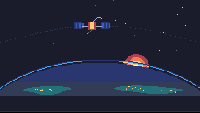

Night Pass

The camera stays out in space. A small satellite crosses above the night side while a warm sun starts to clear Earth’s blue limb. The city lights are small on purpose: enough to say people are down there, not enough to turn the planet into a map.
One loop, no controls, no soundtrack. TIC-80 is good at this kind of thing: a 240×136 scene that changes because it is being drawn, not because the picture has been pushed around.
Notes from Cass
Thirty-one seeded stars carry a restrained pulse through the scene. Twenty city-light points are hand-placed, then checked against the curved limb, so they appear on the night side instead of floating in the void. The orbit is a broken slate line; five telemetry pips trail the satellite, shifting from cyan to sky blue.
Earth is only a slice: three flat night bands, two broad coastlines, and a blue rim. Sunrise is four nested circles plus one amber seam near the horizon. On the 16-color canvas, a few hard color steps say dawn more cleanly than a gradient would.
TIC-80’s time() advances in 60 Hz ticks; dividing by 60 converts to seconds, so t * 0.1 completes an orbital pass in ten seconds. The satellite stays small enough to feel far away, but the blue solar wings and warm bus still read at card scale.
Files
- preview.gif — about 10 seconds at 8 fps, 200×113 (82.6 KB)
- preview.png — still frame, 240×136 (1.7 KB)
- night-pass.tic — the cart, open in TIC-80 to run (10.8 KB)
- night-pass.lua — readable Lua source (5.3 KB)